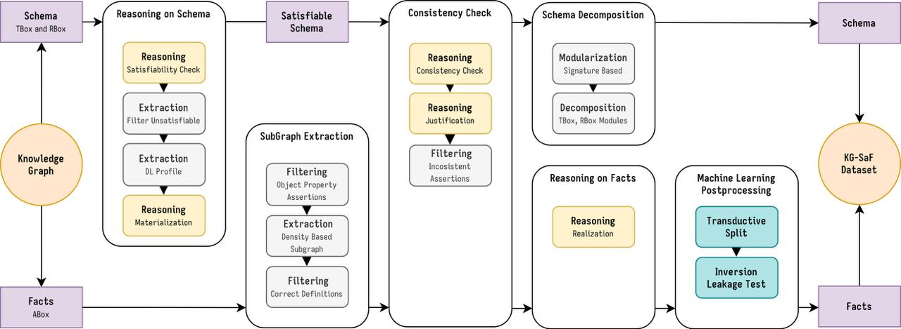

JDeX: Modular Extraction Tool
JDeX Suite
The JDEX suite provides a collection of modular tools for ontology processing and dataset preparation, designed to be used both independently and as part of a unified pipeline.
At its core, JDEX exposes several utilities directly usable in Python, including reasoning services, ontology modularization and decomposition, as well as conversion utilities. These components can be integrated into custom workflows or used standalone for specific tasks, offering flexibility for advanced users.
For ease of use and end-to-end dataset generation, JDEX also provides a complete pipeline accessible through an interactive interface and JSON-based configuration. This allows users to run complex workflows with minimal setup while maintaining full control over each processing step.
The following sections document each component in detail, with emphasis on their individual usage and configuration options. A schematization of the full pipeline (with all reasoing services active) can be found below

Reasoning Utility
Utilities for performing reasoning over OWL ontologies using the ROBOT toolkit, Pellet, and Konclude. It automatically handles switching JAVA_HOME version to handle both Pellet JAVA 8 and ROBOT JAVA 11 requirements.
- class jdex.owl.reasoning.Reasoner(reasoners_path: Path, java8_path: Path, java11_path: Path, java_max_ram: int = 20)[source]
Bases:
objectUnified wrapper around multiple ontology reasoning command-line tools.
This class provides a Python abstraction over several external reasoners and ontology utilities, enabling ontology reasoning workflows directly from Python code. Supported operations include:
Consistency checking via Konclude
Satisfiability checking via ROBOT using HermiT or ELK
Materialization via ROBOT using HermiT or ELK
Realization via Konclude or ROBOT
Filtering axioms/entities via ROBOT
Merging ontologies via ROBOT
Format conversion via ROBOT
Justification for inconsistencies via Pellet
Notes
ROBOT-based operations require Java 11.
Pellet justification requires Java 8.
Konclude is used as a native executable.
- consistency(input_ontology: Path, verbose: int = 1) bool[source]
Run a consistency check on an ontology using Konclude.
- Parameters:
input_ontology (Path) – Path to the input ontology file.
verbose (int, optional) – Verbosity level for status output. Defaults to 1.
- Returns:
Trueif the ontology is consistent,Falseif it is inconsistent.- Return type:
bool
- conversion(input: Path, output: Path, format='owl', verbose: int = 1)[source]
Convert an ontology file to another serialization format using ROBOT.
- Parameters:
input (Path) – Input ontology file.
output (Path) – Output ontology file.
format (str, optional) – Target serialization format accepted by ROBOT. Defaults to
"owl".verbose (int, optional) – Verbosity level for status output. Defaults to 1.
- filtering(input: Path, output: Path, uris: list, verbose: int = 1)[source]
Remove axioms involving specified URIs from a knowledge graph.
- Parameters:
input (Path) – Input ontology or knowledge graph file.
output (Path) – Output file for the filtered ontology.
uris (list) – List of URIs to remove from the ontology signature.
verbose (int, optional) – Verbosity level for status output. Defaults to 1.
- justification(input: Path, output: Path, safety_check: bool = False, verbose: int = 1) list[str][source]
Generate a justification for ontology inconsistency using Pellet.
The method extracts the first MUPS explanation reported by Pellet, writes it in OWL functional syntax, converts it to OWL format, and returns the explanation components.
- Parameters:
input (Path) – Input ontology file.
output (Path) – Output file for the generated justification.
safety_check (bool, optional) – If
True, skip justification when the ontology is already consistent. Defaults to False.verbose (int, optional) – Verbosity level for status output. Defaults to 1.
- Returns:
List of OWL functional syntax expressions that form the extracted explanation. Returns an empty list when no explanation is found.
- Return type:
list[str]
- materialization(input: Path, output: Path, reasoner: str = 'hermit', axioms: list = ['SubClass', 'EquivalentClass', 'EquivalentObjectProperty', 'InverseObjectProperties', 'ObjectPropertyCharacteristic', 'SubObjectProperty', 'ObjectPropertyRange', 'ObjectPropertyDomain'], safety_check: bool = False, verbose: int = 1)[source]
Materialize inferred axioms into an ontology using ROBOT.
- Parameters:
input (Path) – Input ontology file.
output (Path) – Output ontology file for the materialized result.
reasoner (str, optional) – ROBOT reasoner backend to use. Supported values are
"hermit"and"elk". Defaults to"hermit".axioms (list, optional) – ROBOT axiom generators to materialize. Defaults to
PresetAxioms.tbox_materialization().safety_check (bool, optional) – If
True, first verify that the ontology has no unsatisfiable classes or properties. Defaults to False.verbose (int, optional) – Verbosity level for status output. Defaults to 1.
- Raises:
ValueError – If the selected reasoner is not supported.
Exception – If
safety_checkis enabled and the ontology is unsatisfiable or inconsistent.
- merging(input_ontologies: list[str], output, verbose: int = 1)[source]
Merge multiple ontologies into a single output ontology using ROBOT.
- Parameters:
input_ontologies (list[str]) – List of ontology paths or IRIs to merge.
output – Output file path for the merged ontology.
verbose (int, optional) – Verbosity level for status output. Defaults to 1.
- realization(input: Path, output: Path, reasoner: str = 'konclude', verbose: int = 1)[source]
Run ontology realization with the selected reasoner backend.
Realization computes inferred class assertions for individuals in the ontology.
- Parameters:
input (Path) – Input ontology file.
output (Path) – Output file where realized assertions will be saved.
reasoner (str, optional) – Reasoner to use. Supported values are
"konclude","hermit", and"elk". Defaults to"konclude".verbose (int, optional) – Verbosity level for status output. Defaults to 1.
- Raises:
ValueError – If the requested reasoner is not supported.
- satisfiability(input_ontology: Path, reasoner: str = 'hermit', safety_check: bool = False, verbose: int = 1) list[source]
Check ontology satisfiability and collect unsatisfiable entities.
This method invokes ROBOT with the selected reasoner and parses its output to extract the IRIs of unsatisfiable classes and properties.
- Parameters:
input_ontology (Path) – Path to the input ontology file.
reasoner (str, optional) – ROBOT reasoner backend to use. Supported values are
"hermit"and"elk". Defaults to"hermit".safety_check (bool, optional) – If
True, first verify ontology consistency before running satisfiability analysis. Defaults to False.verbose (int, optional) – Verbosity level for status output. Defaults to 1.
- Returns:
List of URIs corresponding to unsatisfiable classes or properties.
- Return type:
list
- Raises:
ValueError – If the selected reasoner is not supported.
Exception – If
safety_checkis enabled and the ontology is inconsistent.
Modularization and Decomposition
Modules for breaking down large ontologies or knowledge graphs into smaller, semantically meaningful components. SignatureModularizer and SchemaDecomposer enable modularization based on signatures.
- class jdex.owl.modularization.SignatureModularizer(schema: Graph, seed: Set[URIRef])[source]
Bases:
objectExtract a module (subgraph) from an OWL ontology based on a signature.
This class implements a simple signature-based modularization strategy. Starting from an initial set of URIs (the seed/signature), it iteratively explores the ontology graph and extracts all triples that are relevant to those entities, including related classes, properties, and blank nodes.
The result is a reduced RDF graph that preserves the local context of the given signature.
- modularize(verbose: bool) Graph[source]
Extract a subgraph (module) from the ontology based on the signature.
The algorithm performs a graph traversal starting from the seed URIs. For each processed element, it:
Adds all outgoing triples to the extracted graph.
- Recursively explores related nodes if they are:
Blank nodes (BNodes),
OWL classes,
Object properties,
Datatype properties.
Built-in OWL/RDF URIs are excluded from further expansion.
- Parameters:
verbose (bool) – Whether to print progress and traversal logs.
- Returns:
A new RDFLib graph containing the extracted module.
- Return type:
Graph
- class jdex.owl.decomposition.SchemaDecomposer(input_graph: Graph)[source]
Bases:
objectDecompose an ontology graph into RBox and TBox-related components.
This class separates an ontology into three logical parts:
RBox: object and datatype property definitions
Taxonomy: subclass relations and their supporting descriptions
Schema: non-taxonomic class axioms and their supporting descriptions
The decomposition is performed over an RDFLib graph and preserves the recursive description of blank nodes and referenced entities where needed.
- decompose(verbose: bool) Tuple[Graph, Graph, Graph][source]
Decompose the ontology into RBox, taxonomy, and schema graphs.
- Parameters:
verbose (bool) – Whether to print progress and traversal logs.
- Returns:
- A tuple containing:
the RBox graph,
the taxonomy graph,
the non-taxonomic schema graph.
- Return type:
Tuple[Graph, Graph, Graph]
Post Processing Utilities
Utilities to convert and serialize ontologies and RDF data into formats usable for downstream processing.
- class jdex.utils.postprocessing.OWLConverter(path: str)[source]
Bases:
objectConvert selected OWL ontology components into JSON-serializable structures.
This converter loads ontology fragments from a dataset directory and transforms selected parts of the schema and assertions into Python dictionaries that can later be serialized as JSON.
- preprocess(taxonomy: bool = True, class_assertions: bool = True, obj_prop_domain_range: bool = True, obj_prop_hierarchy: bool = True, verbose: bool = True)[source]
Load and preprocess selected ontology components.
Depending on the enabled flags, this method parses the corresponding ontology files and stores their converted Python representations for later serialization.
- Parameters:
taxonomy (bool, optional) – Whether to preprocess class taxonomy axioms. Defaults to True.
class_assertions (bool, optional) – Whether to preprocess individual class assertions. Defaults to True.
obj_prop_domain_range (bool, optional) – Whether to preprocess object property domain and range axioms. Defaults to True.
obj_prop_hierarchy (bool, optional) – Whether to preprocess object property hierarchy axioms. Defaults to True.
verbose (bool, optional) – Whether to print progress and traversal logs. Defaults to True.
- preprocess_class_assertions(verbose: bool) dict[source]
Convert individual class assertions into a dictionary representation.
The output maps each named individual URI to the list of classes it belongs to, excluding built-in OWL entities such as
owl:NamedIndividual.Output format:
uri_individual : ['uri_class_1', ..., 'uri_class_n']
- Parameters:
verbose (bool) – Whether to print traversal logs.
- Returns:
Mapping from individual URIs to their asserted class URIs.
- Return type:
dict
- preprocess_obj_prop_domain_range(verbose: bool) dict[source]
Convert object property domain and range axioms into a dictionary.
For each object property, this method collects its declared domains and ranges. If no explicit domain or range is present,
owl:Thingis used as the default value. Complex class expressions are recursively converted to nested Python structures.Output format:
uri_obj_prop : { "domain": ['uri_c_1', ..., 'uri_c_n'], "range": ['uri_c_1', ..., 'uri_c_m'] }
- Parameters:
verbose (bool) – Whether to print traversal logs.
- Returns:
Mapping from object property URIs to their domain/range data.
- Return type:
dict
- preprocess_obj_prop_hierarchy(verbose: bool) dict[source]
Convert object property hierarchy axioms into a dictionary.
The output maps each object property URI to the list of its direct super-properties. Complex property expressions, if present, are recursively converted to nested Python structures.
Output format:
uri_obj_prop : ['super_obj_prop_1', ..., 'super_obj_prop_n']
- Parameters:
verbose (bool) – Whether to print traversal logs.
- Returns:
Mapping from object property URIs to lists of super-properties.
- Return type:
dict
- preprocess_taxonomy(verbose: bool) dict[source]
Convert class taxonomy axioms into a dictionary representation.
The output maps each class URI to the list of its direct superclasses. Complex superclass expressions, such as restrictions or OWL collections, are recursively represented as nested Python dictionaries.
Output format:
uri_class : ['uri_superclass_1', ..., 'uri_superclass_n']
- Parameters:
verbose (bool) – Whether to print traversal logs.
- Returns:
Mapping from class URIs to lists of superclass expressions.
- Return type:
dict
- class jdex.utils.postprocessing.TSVConverter(path: str)[source]
Bases:
objectConvert RDF triple files into TSV representations.
This class reads RDF triple files from a dataset directory and prepares tab-separated
subject predicate objecttext outputs, either for the full triple set or for train/validation/test splits.- convert(triples: bool = True, splits: bool = True)[source]
Precompute TSV representations from RDF triple files.
Depending on the enabled flags, this method converts the complete ABox object-property assertion file and/or the train/validation/test split files into TSV-formatted strings stored in memory for later writing.
- Parameters:
triples (bool, optional) – Whether to convert the complete set of object-property assertion triples. Defaults to True.
splits (bool, optional) – Whether to convert train, validation, and test split files. Defaults to True.
- preprocess_triples(path)[source]
Convert an RDF graph file into a TSV-formatted string.
The produced output contains one triple per line in the format
subject<TAB>predicate<TAB>object.- Parameters:
path (Path) – Path to the RDF triple file to parse.
- Returns:
TSV-formatted text containing all triples from the input graph.
- Return type:
str
- class jdex.utils.postprocessing.IDMapper(path: str)[source]
Bases:
objectCreate deterministic integer ID mappings for ontology entities.
This class loads ontology and individual files, extracts classes, object properties, and named individuals, and assigns each entity a stable integer identifier based on lexicographic sorting of URIs.
- map_to_id()[source]
Generate deterministic URI-to-integer mappings for ontology entities.
IDs are assigned after lexicographically sorting the extracted URIs, which ensures reproducible mappings across runs for the same ontology content. Separate mappings are produced for:
classes
object properties
named individuals
Machine Learning Loaders
This section contains dataset loaders for PyTorch, designed to handle ontology-enriched knowledge graphs. The KnowledgeGraph class provides structured access to ABox triples, TBox taxonomies, and RBox axioms, exposing them as integer-based tensors suitable for embedding models, link prediction, and other graph-based machine learning tasks.
- class jdex.loaders.torch.KnowledgeGraph(path: str)[source]
Bases:
DatasetPyTorch dataset wrapper for ontology-aware knowledge graph data.
This class loads a dataset organized around standard knowledge graph components together with selected ontology-derived structures. It provides access to:
ABox object-property triples for train, validation, and test splits
Class assertions for individuals
TBox taxonomy relations between classes
RBox object-property hierarchy and domain/range constraints
URI-to-ID and ID-to-URI mappings for individuals, classes, and properties
All loaded symbolic data is converted into
torch.Tensorobjects so it can be consumed directly by downstream machine learning pipelines.Notes
The dataset assumes that mapping files and serialized ontology-derived JSON files have already been generated.
Some complex OWL expressions are only partially supported. In particular,
owl:unionOfis handled in domain/range loading, while other complex constructs are skipped with a warning.
- property class_assertions: tensor
Class assertions as
[individual_id, class_id]rows.- Type:
torch.tensor
- class_to_id(class_uri: str) int[source]
Convert a class URI into its integer ID.
- Parameters:
class_uri (str) – URI of the target class.
- Returns:
Integer ID assigned to the class.
- Return type:
int
- property dataset_location: str
Absolute path to the dataset root directory.
- Type:
str
- id_to_class(class_id: int) str[source]
Convert a class ID back into its URI.
- Parameters:
class_id (int) – Integer ID of the target class.
- Returns:
URI corresponding to the given class ID.
- Return type:
str
- id_to_individual(individual_id: int) str[source]
Convert an individual ID back into its URI.
- Parameters:
individual_id (int) – Integer ID of the target individual.
- Returns:
URI corresponding to the given individual ID.
- Return type:
str
- id_to_obj_prop(obj_prop_id: int) str[source]
Convert an object property ID back into its URI.
- Parameters:
obj_prop_id (int) – Integer ID of the target object property.
- Returns:
URI corresponding to the given object property ID.
- Return type:
str
- individual_classes(individual_id: int) tensor[source]
Return all asserted classes for a given individual.
- Parameters:
individual_id (int) – Integer ID of the individual.
- Returns:
Tensor containing the class IDs asserted for the individual.
- Return type:
torch.tensor
- individual_to_id(individual_uri: str) int[source]
Convert an individual URI into its integer ID.
- Parameters:
individual_uri (str) – URI of the target individual.
- Returns:
Integer ID assigned to the individual.
- Return type:
int
- is_leaf(class_id: int) bool[source]
Check whether a class has no known subclasses in the taxonomy.
- Parameters:
class_id (int) – Integer ID of the class.
- Returns:
True if the class has no subclasses, False otherwise.
- Return type:
bool
- obj_prop_domain(obj_prop_id: int) tensor[source]
Return the declared domain classes of an object property.
- Parameters:
obj_prop_id (int) – Integer ID of the object property.
- Returns:
Tensor containing the class IDs occurring in the property’s domain.
- Return type:
torch.tensor
- obj_prop_range(obj_prop_id: int) tensor[source]
Return the declared range classes of an object property.
- Parameters:
obj_prop_id (int) – Integer ID of the object property.
- Returns:
Tensor containing the class IDs occurring in the property’s range.
- Return type:
torch.tensor
- obj_prop_to_id(obj_prop_uri: str) int[source]
Convert an object property URI into its integer ID.
- Parameters:
obj_prop_uri (str) – URI of the target object property.
- Returns:
Integer ID assigned to the object property.
- Return type:
int
- property obj_props_domain: tensor
Object-property domain assertions as
[property_id, class_id]rows.- Type:
torch.tensor
- property obj_props_domains_range: tensor
Combined domain/range assertions as
[property_id, marker, class_id]rows.- Type:
torch.tensor
- property obj_props_hierarchy: tensor
Object-property hierarchy as
[subproperty_id, superproperty_id]rows.- Type:
torch.tensor
- property obj_props_range: tensor
Object-property range assertions as
[property_id, class_id]rows.- Type:
torch.tensor
- sub_classes(class_id: int) tensor[source]
Return the direct subclasses of a class.
- Parameters:
class_id (int) – Integer ID of the class.
- Returns:
Tensor containing the subclass IDs of the input class.
- Return type:
torch.tensor
- sub_obj_prop(obj_prop_id: int) tensor[source]
Return the direct sub-properties of an object property.
- Parameters:
obj_prop_id (int) – Integer ID of the object property.
- Returns:
Tensor containing the IDs of the sub-properties.
- Return type:
torch.tensor
- sup_classes(class_id: int) tensor[source]
Return the direct superclasses of a class.
- Parameters:
class_id (int) – Integer ID of the class.
- Returns:
Tensor containing the superclass IDs of the input class.
- Return type:
torch.tensor
- sup_obj_prop(obj_prop_id: int) tensor[source]
Return the direct super-properties of an object property.
- Parameters:
obj_prop_id (int) – Integer ID of the object property.
- Returns:
Tensor containing the IDs of the super-properties.
- Return type:
torch.tensor
- property taxonomy: tensor
Taxonomy edges as
[subclass_id, superclass_id]rows.- Type:
torch.tensor
- property test: tensor
Test ABox triples as
[subject, predicate, object]rows.- Type:
torch.tensor
- property train: tensor
Training ABox triples as
[subject, predicate, object]rows.- Type:
torch.tensor
- property valid: tensor
Validation ABox triples as
[subject, predicate, object]rows.- Type:
torch.tensor
Naive Inconsistencies Filtering
- class jdex.utils.consistency.InconsistenciesFilterer(java_8_path: str, java_11_path: str)[source]
Bases:
objectIteratively detect and remove inconsistent assertions from a knowledge graph.
This class uses an external OWL reasoner (via the
Reasonerabstraction) to check ontology consistency and compute justifications for inconsistencies. It then removes offending assertions (class assertions and object property assertions) until the knowledge graph becomes consistent.The filtering process is destructive with respect to the working copy of the ontology but preserves the original input file.
- filter_inconsistencies(knowledge_graph: str, output_folder: str)[source]
Run iterative inconsistency detection and filtering on a knowledge graph.
The method performs the following steps:
Copies the input ontology to a working file (
fkg.owl).Parses and normalizes the ontology serialization.
- Repeatedly:
Checks consistency using the configured reasoner.
If inconsistent, computes a justification.
Extracts offending assertions (ClassAssertion and ObjectPropertyAssertion).
Removes those assertions from the graph.
Stops when the ontology becomes consistent.
Writes removed triples to a separate file for inspection.
- Parameters:
knowledge_graph (str) – Path to the input ontology file (.owl).
output_folder (str) – Directory where intermediate and output files will be stored.
- Side Effects:
Creates a working ontology file
fkg.owlin the output directory.Writes a justification file
justification.owlduring processing.Writes removed triples to
removed.nt.Modifies the working ontology until it becomes consistent.
Naive Description Logic Profile Filtering
- class jdex.owl.modularization.BaseDLProfileFilter(input_graph: Graph)[source]
Bases:
ABCAbstract base class for Description Logic profile filtering.
This class defines the common infrastructure for syntactically filtering an OWL ontology represented as an RDFLib graph into a restricted Description Logic (DL) profile.
Subclasses implement the profile-specific admissibility test for OWL class expressions, while this base class provides:
ontology graph initialization,
namespace preservation,
common axiom traversal,
recursive copying of accepted class expressions,
RDF list copying,
common declaration preservation.
The filtering is purely syntactic: unsupported axioms are discarded rather than rewritten, normalized, or approximated.
- Typical subclass responsibilities:
decide whether a class expression is valid in the target profile,
decide whether profile-specific axioms (e.g. disjointness) are kept,
optionally retain additional role/property axioms.
- onto_graph
The source ontology graph.
- Type:
Graph
- CARDINALITY_PREDICATES = {rdflib.term.URIRef('http://www.w3.org/2002/07/owl#cardinality'), rdflib.term.URIRef('http://www.w3.org/2002/07/owl#maxCardinality'), rdflib.term.URIRef('http://www.w3.org/2002/07/owl#maxQualifiedCardinality'), rdflib.term.URIRef('http://www.w3.org/2002/07/owl#minCardinality'), rdflib.term.URIRef('http://www.w3.org/2002/07/owl#minQualifiedCardinality'), rdflib.term.URIRef('http://www.w3.org/2002/07/owl#qualifiedCardinality')}
- DISALLOWED_COMMON = {rdflib.term.URIRef('http://www.w3.org/2002/07/owl#hasSelf'), rdflib.term.URIRef('http://www.w3.org/2002/07/owl#hasValue'), rdflib.term.URIRef('http://www.w3.org/2002/07/owl#oneOf')}
- filter_graph(verbose: bool = False) Graph[source]
Filter the ontology graph according to the concrete DL profile.
This method scans the ontology graph and builds a new graph containing only the axioms and structures accepted by the current profile.
- The following common elements are handled here:
namespace bindings,
ontology declaration,
named class declarations,
object property declarations,
rdfs:subClassOf axioms,
owl:equivalentClass axioms.
Additional profile-specific axioms may be added by subclasses through _copy_profile_specific_axioms().
- Parameters:
verbose – Whether to emit debug/progress messages through verbose_print.
- Returns:
A new RDFLib graph containing only axioms compatible with the selected Description Logic fragment.
- class jdex.owl.modularization.ELProfileFilter(input_graph: Graph)[source]
Bases:
BaseDLProfileFilterFilter an ontology graph to the Description Logic profile EL.
This class retains only OWL axioms whose class expressions belong to the lightweight EL fragment.
- Supported EL constructs:
named classes,
owl:Thing,
conjunction (owl:intersectionOf),
existential restrictions (owl:someValuesFrom) on object properties.
- Rejected constructs include:
disjunction,
negation,
universal restrictions,
cardinality restrictions,
nominals,
value/self restrictions.
Additionally, this implementation preserves simple object property inclusion axioms of the form:
R rdfs:subPropertyOf S
when both sides are declared object properties.
- class jdex.owl.modularization.ALCProfileFilter(input_graph: Graph)[source]
Bases:
BaseDLProfileFilterFilter an ontology graph to the Description Logic profile ALC.
This class retains OWL axioms whose class expressions belong to the ALC fragment, which is strictly more expressive than EL.
- Supported ALC constructs:
named classes,
owl:Thing,
owl:Nothing,
conjunction (owl:intersectionOf),
disjunction (owl:unionOf),
negation (owl:complementOf),
existential restrictions (owl:someValuesFrom),
universal restrictions (owl:allValuesFrom),
disjointness axioms (owl:disjointWith).
- Rejected constructs include:
cardinality restrictions,
nominals,
value/self restrictions,
advanced role axioms outside plain ALC.
- DISALLOWED_ALC_ROLE_AXIOMS = {rdflib.term.URIRef('http://www.w3.org/2002/07/owl#AsymmetricProperty'), rdflib.term.URIRef('http://www.w3.org/2002/07/owl#FunctionalProperty'), rdflib.term.URIRef('http://www.w3.org/2002/07/owl#InverseFunctionalProperty'), rdflib.term.URIRef('http://www.w3.org/2002/07/owl#IrreflexiveProperty'), rdflib.term.URIRef('http://www.w3.org/2002/07/owl#ReflexiveProperty'), rdflib.term.URIRef('http://www.w3.org/2002/07/owl#SymmetricProperty'), rdflib.term.URIRef('http://www.w3.org/2002/07/owl#TransitiveProperty'), rdflib.term.URIRef('http://www.w3.org/2002/07/owl#inverseOf')}
Configuration Utility
This section describes the general configuration structure used by JDEX.
It provides an overview of the available configuration classes and their default behavior. However, it is not intended to be a complete guide for setting up a configuration file.
For a step-by-step explanation and practical examples, please refer to the Configuration Tutorial
- class jdex.config.ReasoningConfig(java_8_home: str | None = None, java_11_home: str | None = None, java_max_ram: int = 4, satisfiability: SatisfiabilityConfig = <factory>, materialization: MaterializationConfig = <factory>, realization: RealizationConfig = <factory>, modularization: ModularizationConfig = <factory>, decomposition: DecompositionConfig = <factory>, consistency: ConsistencyConfig = <factory>)[source]
Bases:
objectConfiguration for all reasoning services.
- java_8_home
Path to Java 8 installation.
- Type:
str | None
- java_11_home
Path to Java 11 installation.
- Type:
str | None
- java_max_ram
Maximum RAM (GB) allocated to Java.
- Type:
int
- satisfiability
Satisfiability settings.
- Type:
SatisfiabilityConfig
- materialization
Materialization settings.
- Type:
MaterializationConfig
- realization
Realization settings.
- Type:
RealizationConfig
- modularization
Modularization settings.
- Type:
ModularizationConfig
- decomposition
Decomposition settings.
- Type:
DecompositionConfig
- consistency
Consistency settings.
- Type:
ConsistencyConfig
- consistency: ConsistencyConfig
- decomposition: DecompositionConfig
- classmethod from_dict(data: dict[str, Any] | None) ReasoningConfig[source]
Create a ReasoningConfig from a dictionary.
- java_11_home: str | None = None
- java_8_home: str | None = None
- java_max_ram: int = 4
- materialization: MaterializationConfig
- modularization: ModularizationConfig
- realization: RealizationConfig
- satisfiability: SatisfiabilityConfig
- class jdex.config.JDEXConfig(dataset_name: str, paths: PathsConfig, verbose: int = 1, interactive_shell: bool = True, reasoning: ReasoningConfig = <factory>, test_leakage_filtering: TestLeakageFilteringConfig = <factory>, split: SplitConfig = <factory>, description_logic_profile: Literal['EL', 'ALC', None]=None, post_processing: PostProcessingConfig = <factory>)[source]
Bases:
objectTop-level configuration for JDEX pipeline.
- dataset_name
Name of the dataset.
- Type:
str
- paths
Input/output paths configuration.
- Type:
PathsConfig
- verbose
Verbosity level.
- Type:
int
- interactive_shell
Whether to enable interactive mode.
- Type:
bool
- reasoning
Reasoning configuration.
- Type:
- test_leakage_filtering
Global leakage filtering.
- Type:
TestLeakageFilteringConfig
- split
Dataset splitting configuration.
- Type:
SplitConfig
- description_logic_profile
DL profile (“EL”, “ALC”, “SROIQ”, or None).
- Type:
DLProfile
- post_processing
Post-processing configuration.
- Type:
PostProcessingConfig
- Raises:
ValueError – If an invalid description logic profile is provided.
- dataset_name: str
- description_logic_profile: Literal['EL', 'ALC', None] = None
- classmethod from_dict(data: dict[str, Any]) JDEXConfig[source]
Create a JDEXConfig from a dictionary.
- Parameters:
data (dict[str, Any]) – Configuration dictionary.
- Returns:
Initialized configuration object.
- Return type:
- interactive_shell: bool = True
- paths: PathsConfig
- post_processing: PostProcessingConfig
- pretty_print() str[source]
Return a formatted string summarizing the configuration.
- Returns:
Human-readable configuration summary.
- Return type:
str
- reasoning: ReasoningConfig
- split: SplitConfig
- test_leakage_filtering: TestLeakageFilteringConfig
- verbose: int = 1